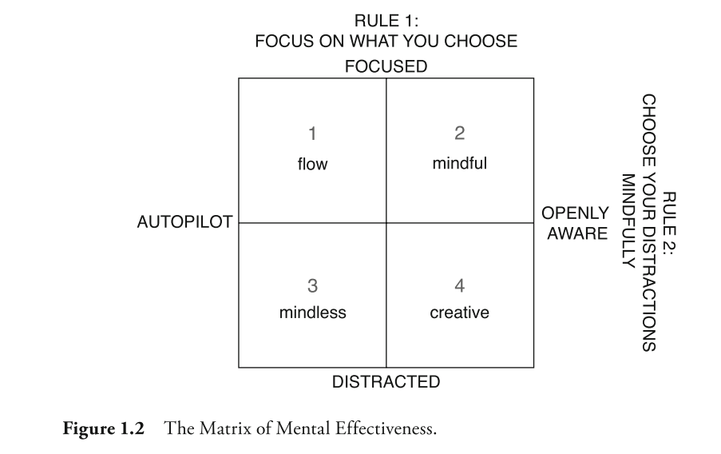
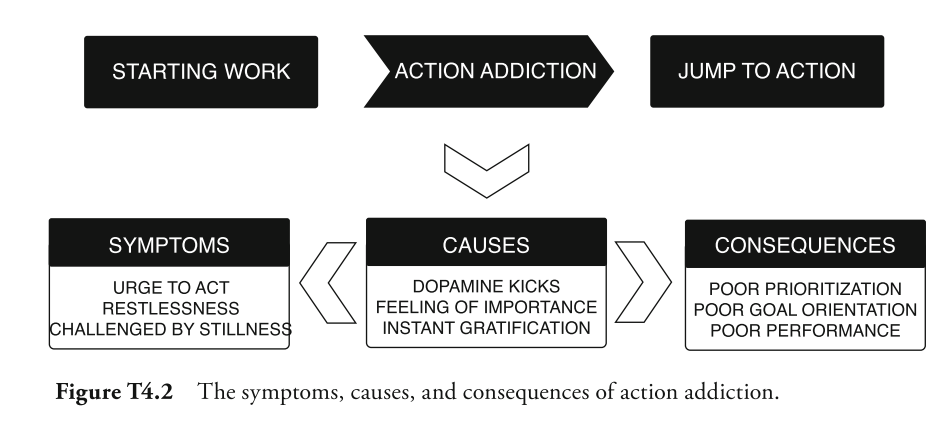
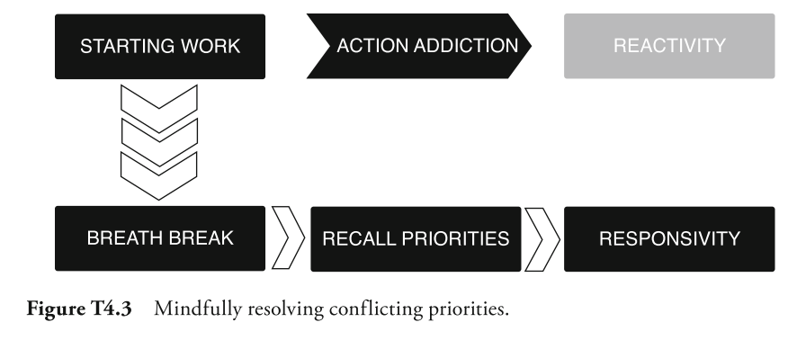
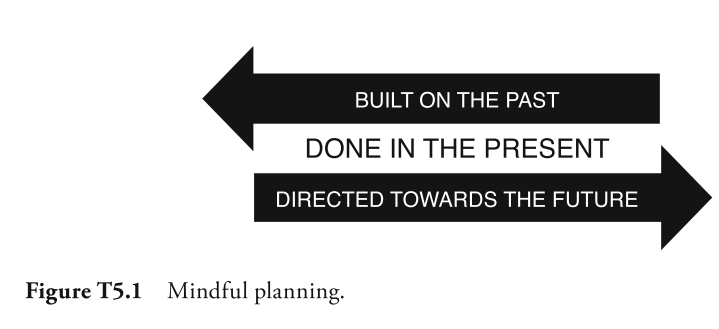
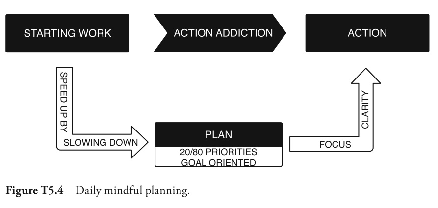
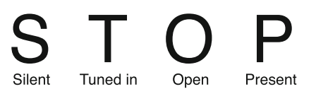
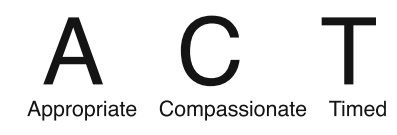
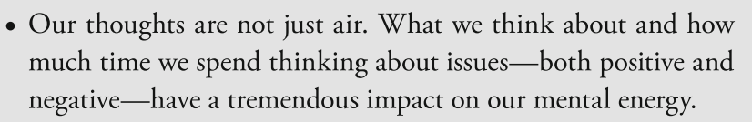
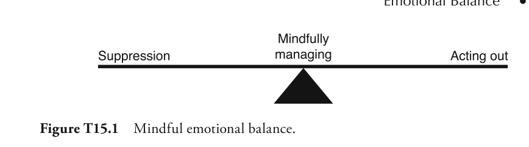
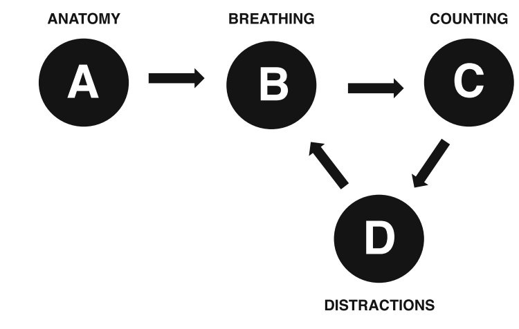

Mindfulness
Mindfulness means trained attention. Based on thousands of years of practice, mindfulness techniques enable people to manage their attention, improve their awareness, and sharpen their focus and clarity.
A mind in balance, which sees reality clearly and values ethics.
Life is about results. Results come from our actions. Our actions come from the choices we make. Our choices come from the thoughts we think.
We are living in an "attention economy" where the ability to manage our attention and the quality of our attention is key to our success. But in the digital age, where our ability to pay attention at will is under siege, we have a problem.
We're not capable of focusing attention on two things at the same time. When we think we are multitasking, what we are doing in reality is shift-tasking : shifting attention rapidly between two or more things.
Mindfulness is about you. It's about overcoming the multitasking trap, and entering the attention economy being one second ahead of your wandering mind and external distractions. It's about achieving your goals, objectives, and wishes in life.
The central characteristics of mindfulness are focus and open awareness.
Sharp focus is the ability to concentrate single-pointedly on any object of choice for a long as you want with minimal effort. Training sharp focus provides the benefit of being fully present with other people or tasks.
Open awareness is the ability to see clearly what is happening in your mind and make wise choices about where to focus your attention. You gain clarity. As you become more insightful, even the most difficult problems appear less complex and become easier to handle.
Rule #1: Focus on What You Choose
Staying focused on the object of your choice is the first rule of mental effectiveness. A focused mind does not multitask: instead, it's fully present on the person or task at hand.
Rule #2: Choose Your Distractions Mindfully
Rule #2 ensures you work in a focused way while remaining open to your surroundings and recognizing when you should change focus.
Rule #2 invites us to make a subtle evaluation of every distraction. Should I deal with this distraction now or let it go? Rule #2 requires consciously choosing to let go of the task you were working on and focusing your full attention on your boss. Rule #1 becomes re- engaged at this point.

-
As the first quadrant shows, when you are focused but on autopilot, your state of mind can be described as being in "flow." Some people prefer to be in this state, especially when they're tackling routine tasks or physical work. This can pose a problem even during routine work, because you may neglect sensory signals of important events around you or physiological signals indicating you need rest, movement, or food. We need awareness to pick up on relevant distractions---like our boss coming into our office
-
In the second quadrant---defined as "mindful"---we have the greatest mental bandwidth to complete tasks and the highest quality of interactions with our environment and other people. Representing the junction of the two rules of mental effectiveness.
-
In the third quadrant, you're neither focused nor aware. Some people see this quadrant as the most relaxing. With a bit of training you will see that a focused mind is much more relaxed than a distracted mind.
-
In the fourth quadrant, you're aware but easily distracted. There can be benefits to loosening focus and allowing random thoughts to bubble up. Some people find that they come up with more creative ideas in this quadrant. Good ideas only become innovative solutions when you have the focus to retain and execute them.
Techniques
Emails
Avoid email addiction
-
Disable email notifications
-
Don't do emails first thing in the morning ( use energy for something for useful )
-
Allocate only certain, fixed times during the day to fully focus on e-mail.
Before sending:
-
Should this e-mail be sent at all? And should all these people be copied?
- E-mail is widely overused. Make sure you're not just adding to the chatter. Make sure your e-mail really needs to be sent. It's okay to delete an e-mail if it really isn't that important.
-
Does the e-mail contain the information needed for it to be understood correctly?
- We've all sent or received a message without an attachment or other key detail. Oversights like these can cause multiple messages to go back and forth, all with similar questions.
-
How will the recipient perceive this e-mail?
- Put yourself in the recipient's shoes. How can you phrase this note to best avoid negative speculation in the recipient's mind?
Avoid Emotional E-mailing
-
Wait one day before replying. When you come across an e-mail that generates negative reactions, stop. Do not give in to the impulse to answer immediately.
-
Think about alternative communications channels.
Meetings
Before
Preparing: Before you introduce an agenda, simply invite meeting participants to take a brief mental break, to relax, settle their mind, and become present in the room. Sitting in a room silently for a few moments can create a strong feeling of togetherness and unity.
During
Be present: In meetings, presence forms the foundation for effectiveness. When we're present with other people, we get the most out of our time together.
Every meeting you're in, you have the opportunity to make the people you're with the anchor of your attention. To do so, focus your attention on the person who is speaking.
After
Taking just a few minutes can help further clear the mind and increase relaxation, focus, and clarity for upcoming activities.
If the meeting finishes at an appropriate time, there's less of a rush. This means you have the opportunity to look coworkers in the eye and thank them for their time and attention. When a meeting is concluded with gratitude and appreciation, people are more willing to meet again and a positive pat- tern for meetings develops.
Goals
When you have clear goals, it's far easier to stay focused and aware.
When it comes to maintaining clear goals, it's important to manage both our conscious mind and our subconscious processes. Our sub- conscious is primarily driven by two simple motivations: grasping for things we like and avoiding things we don't like. While our subconscious often craves short-term
Mindful Goal Orientation
-
When you find yourself behaving counter to your goals, take a mindful pause (---focus on your breath as you calm down, gaining focus and clarity. This establishes your awareness.
-
Ask yourself the question "What stories, beliefs, or grasping or avoidance is keeping me from doing the thing that moves me closer to my goal?"
-
Whatever you find, face it and dismantle it by being present with it.
-
Adjust your behavior and move on.
Mindful Goal Setting
-
Clearly defined and specific goals are easier for your subconscious to understand.
-
Positively framing your goals also makes it easier for your subconscious to process them. By default, the subconscious moves toward the desirable and away from the unpleasant.
-
Learning to hold our goals lightly, and let go of them if they won't bring us long-term happiness, is an important skill.
Priorities
Action Addiction
Addiction to action is one of the biggest threats to mental effectiveness and productivity. A well-trained mind is the only way to overcome it. The tasks are in front of us, and we want to be useful and productive. Ensure that spend time on tasks is aligned with our main goals

Focus your effort on the 20% that produce 80% of your output.
Choice points -- when priorities conflict
We often react to choice points by jumping into action. There it is again, that action addiction. But, as you now know, not all action is aligned with our goals. When priorities conflict, take a breath before you jump into action. Endure the discomfort of conflicting priorities.

Speed Up by Slowing Down
By taking a brief pause, you're able to maintain your focus and awareness. This allows you to respond to situations with the most appropriate action---to concentrate on your priorities and goals---rather than simply acting on autopilot.
Planning
Real planning requires slowing down, so that you can speed up. It's an investment in time up front that has significant payback down the road.

Too often, instead of moving forward through intentional action, we end up stuck in place: working, acting, trying, but not making any real progress. The morning is the most important choice point of the day. As it sets the tone for the rest of the day, it's critical to begin the morning with a period of clear planning.
Clear Planning on a Daily Basis
When you get to work, make a habit of reserving the first ten minutes to do the following:
-
Do one to two minutes of ABCD mindfulness training to enhance your focus and subdue the impulse of action addiction.
-
Make a short list of the highest priority activities of the day---or review a list you made at the end of the previous day.
-
Plan your calendar for the day according to the highest priorities.
-
Now, get to work.
-
Review your plan once or twice during the day to track your progress.

-
Weekly and monthly planning sessions can help you keep the big picture in mind and manage your calendar accordingly.
-
Allocate most of your time to completing activities that deliver the greatest outcomes for the least amount of effort.
-
Leave time for the urgent matters that will inevitably crop up. How much time you set aside for urgent matters depends on the nature of your work. Whatever you decide, saving a realistic margin of unscheduled time can help you avoid being put under unnecessary pressure.
-
Consider how much time you need to recharge your mental batteries every day---whether through small breaks, a short walk, or your ten minutes of mindfulness training.
-
Finally, make sure to reserve time for unavoidable "transition" activities, such as follow-up communication after meetings and travel.
Communication
The foundation of mindful communication is, as in many other aspects of life, being fully present in your interactions with other people.
Empathy---being in tune with the feelings of others---plays a major role in effective communication. If you have a sense of how the person with whom you're trying to communicate feels, it's easier to get on their wavelength.
Two fundamental tendencies in the human mind create barriers to effective communication. First, there's the reality of the mind's natural tendency to wander. The second tendency is our mind's orientation to see things as we expect to see them, commonly known as habitual perception.
Listen with Mindfulness
Simply put, listening with mindfulness involves giving your full attention to whoever is speaking. There are four guidelines for listening with this type of focus.

Speaking with Mindfulness

Creativity
Take more intentional pauses throughout these meetings to give people the opportunity to relax and release any of the attachment they had to one idea or another.
-
Formulate the Problem (and write it down)
-
Let go of the problem
-
Allow time
-
Activate
You've now identified a problem, let it go, and given your subconscious time to work. The final task is to help your subconscious communicate with your conscious.
Change
We are habitual beings. In fact, scientists estimate that 95 percent of our behaviors are based on habit. In other words, only 5 percent of what we do is based on conscious choice.
Since we're habitual beings, doing anything differently takes effort. Even if the change is something we want, it requires effort to overcome both our neurological impulse to keep things the same as well as our ingrained habitual patterns.
When we try to resist resistance, we only generate more of it. We create an inner struggle that often leads to anger, frustration, stress, and anxiety. Resisting resistance doesn't help us move forward; instead, it negatively impacts both our health and well-being.
Once you're able to observe your resistance, see whether there's anything you can learn from it. Are you resisting simply because of your natural preference for familiarity? Or are you resisting because something legitimately doesn't make sense? Seeking to understand the underlying driver of your resistance can be insightful.
Mental energy

-
Being Present
Being present in the here and now is a simple and easy way to conserve mental resources. When we allow our mind to wander aimlessly, it's using up valuable energy that could be better used in other pursuits.
- choose a task and stick with it. Notice the impact that not jumping back and forth between tasks can have on your energy.
-
Leveraging Cycles
Our mental energy naturally ebbs and flows throughout the day, in cycles that have a lot to do with our sleep, nutrition, and level of physical activity. For most people, energy levels are higher first thing in the morning, after a good night's rest. Those energy levels tend to decrease during the day, with a low point after lunch, before increasing again later in the afternoon. Being mindful of our how our energy levels fluctuate enables us to be strategic about what we do and when.
Waking Mindfully
As you wake, be determined not to start thinking. Just be. Notice your body. Notice your mind. But do not engage in the thoughts trying to arise. Sit up, at the edge of your bed, and do two minutes of mindfulness training. Focus on your breath and let go of any thoughts.
Eating and Energy
To get the most out of mindful eating, there are three basic guidelines:
- Let Your Stomach Do the Eating
A simple mindful tip for eating is to let your stomach do the eating. There's no need to finish everything in front of you right this second.
- Avoid the Blood Sugar Rollercoaster
An hour or two after lunch, we hit the afternoon slump---a fatigue our brains mis- takes for a lack of blood glucose. A natural and automatic reaction is to grab a snack, a cup of coffee, or an energy drink to quickly raise our energy levels. But a snack---and a sugary one in particular---can raise blood sugar levels too high. After a short while, blood sugar levels plummet. A sense of panic results due to the stress, cortisol, and adrenaline released when fatigue and brain fog set in. Then we're right back where we started, at the bottom of the roller coaster, with our brains craving another fix of fast energy.
When you're mindful of your food, awareness tells you when you have had enough. You tend to eat less. You also tend to enjoy food more, because you actually pay attention to it.
Performance breaks
A mindful performance break is basically a very brief mindfulness training session. And by brief, I mean about 45 seconds. To take mind- ful performance breaks, try this, once every hour during work.
-
Let go of your activities. You don't need to go anywhere special.
-
Close your eyes or keep them open, whichever you prefer. Direct your full attention to your breath. For three breath cycles do the following:
-
Breathe in while noticing your breath breathe out while relaxing your shoulders, neck, and arms.
-
Breathe in while focusing fully on your inhale; breathe out while focusing on the exhale.
-
Breathe in while enhancing the clarity of your attention; breathe out while maintaining clarity.
-
-
Let go of the exercise. Return to your work with renewed relaxation, focus, and clarity.
Emotional balance

In mindfulness training, we work to develop the mental capacity, the patience, and the courage to endure discomfort. At the same time, we learn to observe our emotions with some neutrality.
Mental strategies
When we're present for others, we embody all three definitions of present : we're here and in this moment as a gift for other people. Instead of hopping on the neural carousel, be fully present when you're with other people. Be fully present with your tasks. Be fully present with challenges when they occur. Being present in the moment doesn't require a change in what you do . It requires a change in how you pay attention to what you do. It's a conscious decision to be present in the moment.
Patience
"A moment of patience in a moment of anger saves you a thousand moments of regret."
Patience involves choosing to stay calm in the face of challenging situations, even when our fight or flight reflex might already be triggered. It's the ability to endure unpleasantness, to confront the situation directly and handle it sensibly, rather than on impulse. Patience is more concerned with larger goals than temporary, quick-fix solutions.
Patience is the direct path to living a more effective life that's focused on the roots of problems instead of the symptoms.
Kindness
What do we need from other people to be happy? Often the answer is simple: things like presence, attention, respect, understanding, and acceptance. What do other people need from us to be happy? The exact same things. In this way, we're all experts in making each other happy.
Beginners mind
Challenge yourself to be more curious in your day-to-day activities. Be open to what is happening to you moment to moment. The less you presume to know, the more your mind will open.
Training sharp focus
Sharp focus is the ability to concentrate on thoughts and tasks of your choice, without feeling the need to indulge each and every distraction that passes through your mind. Having this sort of mental clarity can help the busiest of us thrive, even in high-pressure environments filled with distractions.
The ABCD Method

From Sharp Focus to Open Awareness
Training open awareness provides you with the opportunity to experience, with a depth of understanding, that your thoughts are the root cause of your problems.
The essence of open awareness training is observing your thoughts, senses, emotions and tasks in a neutral way---like a mental observatory.
Use open awareness as a basis for your training for a couple of weeks as you develop your ability to be a neutral observer of your thoughts and experiences. When you feel able to respond to distractions deliberately rather than react automatically, you can move to the next level of open awareness training that includes the three insights outlined below.
Insight #1: Everything Changes
-
Is there anything you experience that is unchanging?
-
Is there a thought that never goes away?
-
Is there anything solid and static, or is it all a process?
Insight #2: Happiness Is a Choice
"We all have two wolves inside us. One is bad and feels anger, jealousy, envy, falsehoods, and arrogance. The other is good and feels love, empathy, honesty, generosity, and humility. The two wolves constantly fight each other." One of the grandchildren asks, "But which one wins?" "The one you feed," the old man answers.
Insight #3: Everything Is Potential
The insight that everything is potential and that there is no solid, isolated self means we can redefine ourselves. We can break free of our own limited definitions of ourselves and others. New possibilities open up in every situation we encounter. Nothing is fixed. We have the choice to define all people and all situations based on our perspectives, however narrow or expansive they may be. When everything is potential, it offers each and every one of us an abundance of opportunities and positive outcomes.